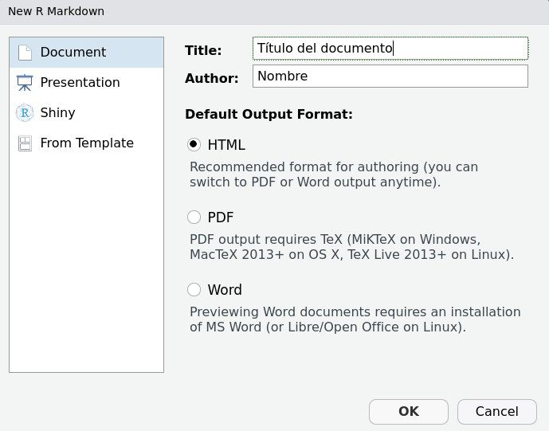

Semillero de R - FacCA
Ecosistema R Markdown I
¿Qué es Markdown?
“Markdown es un lenguaje de marcado ligero creado por John Gruber que trata de conseguir la máxima legibilidad y facilidad de publicación tanto en su forma de entrada como de salida, inspirándose en muchas convenciones existentes para marcar mensajes de correo electrónico usando texto plano.”
R Markdown
Flujo de trabajo: archivo .Rmd
- Crear archivo nuevo de extensión .Rmd.
- File -> New File -> R Markdown
- Guardar archivo .Rmd
- File -> Save with Encoding -> UTF-8.
Flujo de trabajo: R Markdown
- Texto en formato markdown.
- Fragmentos de código R.
- Compilación de archivos .html.
- Teclas de acceso rápido:
Ctrl + Alt + i: insertar código R.Ctrl + Shift + k: compilar el documento a formato .html.
Elementos básicos de Markdown
Títulos o encabezados
# Título 1
## Título 2
### Título 3Viñetas
- Viñeta 1
- Viñeta 2
- Subviñeta 2.1
- Viñeta 3
* Viñeta 1
* Viñeta 2
* Subviñeta 2.1
* Viñeta 3
+ Viñeta 1
+ Viñeta 2
+ Subviñeta 2.1
+ Viñeta 3 Insertar imagen
 Insertar hipervínculo
- Primera forma:
https://es.wikipedia.org/wiki/Git - Segunda forma:
[Git Wikipedia](https://es.wikipedia.org/wiki/Git) Opciones de texto
- Cursiva:
*Texto*
_Texto_- Negrilla:
**Texto**
__Texto__- Negrilla cursiva:
***Texto***
___Texto___Recursos de información
R Markdown: The Definitive Guide
.png)
Sitios de divulgación con RStudio
RPubs y RStudio Connect
- Crear cuenta en Rpubs.
- RStudio Connect.
.jpeg)